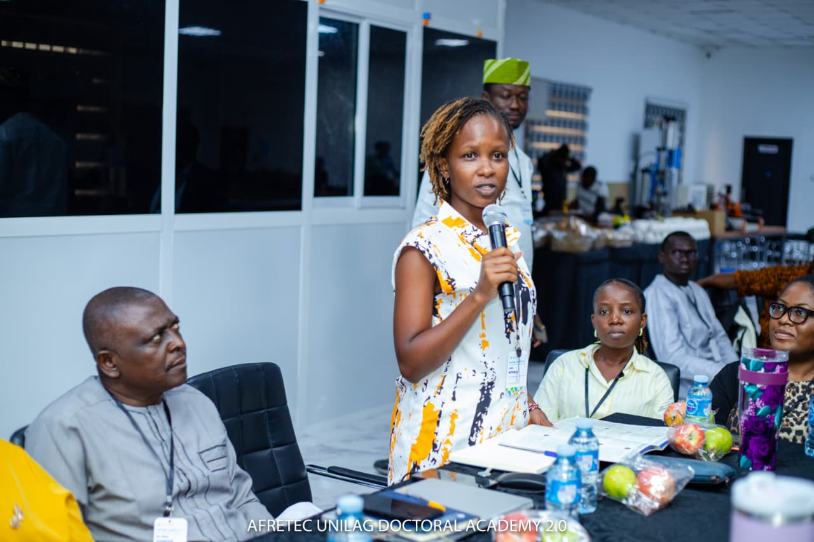
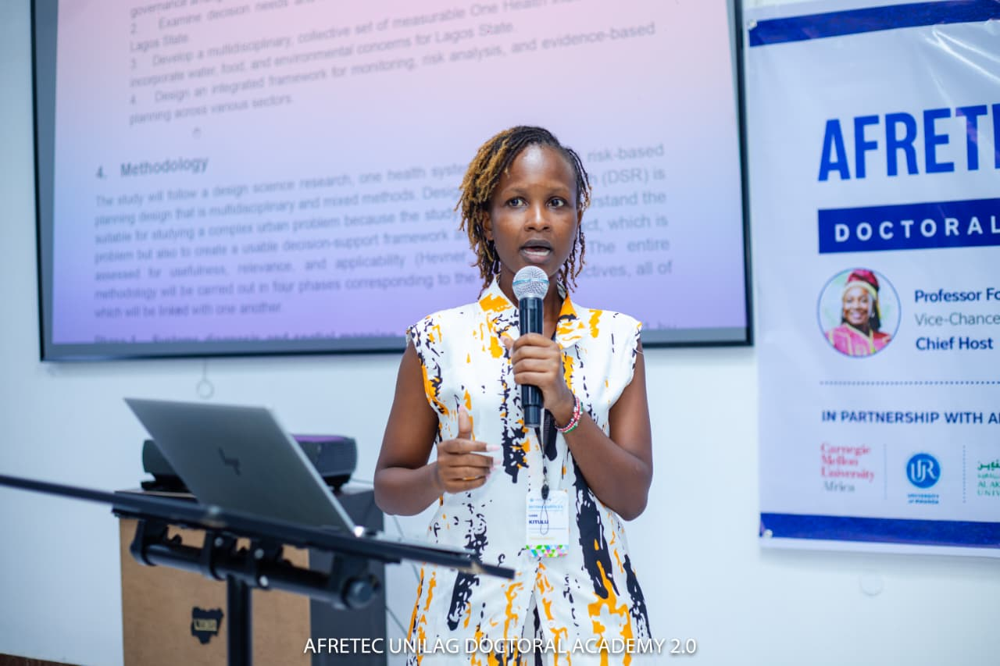
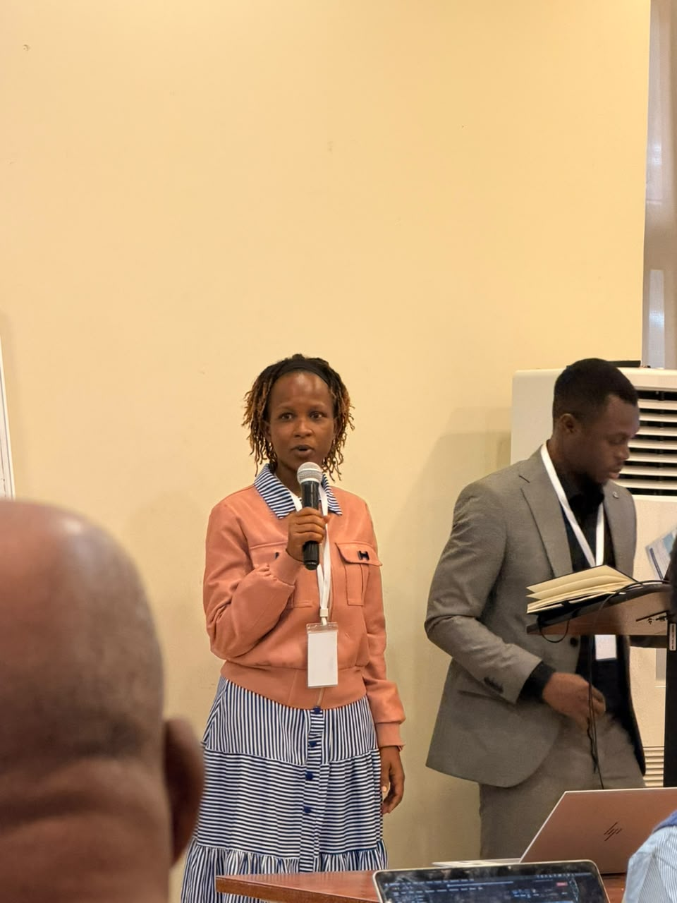
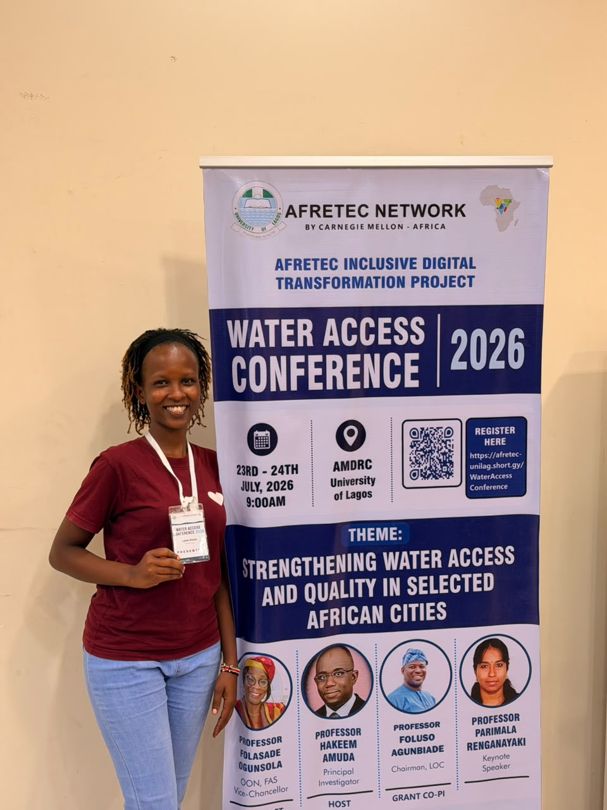
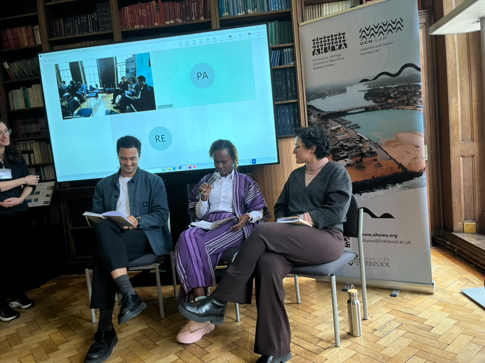

Roundtable feedback
Presenting during a discussion at the AFRETEC Doctoral Academy, University of Lagos. Researchers and mentors exchanged feedback on research design, methods and practical use of findings in African cities.
Sustainable Urbanization, University of Lagos (Oct 2025 to date). Research on integrating wastewater as an alternative water source in Lagos and Nairobi.
Moments and short clips from conferences where the research has been shared. Hover to pause.
University of Lagos

Presenting during a discussion at the AFRETEC Doctoral Academy, University of Lagos. Researchers and mentors exchanged feedback on research design, methods and practical use of findings in African cities.

Introducing the PhD work on wastewater as an alternative water source, beside the Academy banner. The session invited questions on method, data and policy relevance for Lagos and Nairobi.

Taking questions after the presentation. Comments from peers and supervisors helped sharpen the research focus and clarify how the findings can support water planning in both cities.
University of Lagos

Sharing early insights at the Water Access Conference, themed on water access and quality in selected African cities, with a focus on wastewater reuse and the planning gaps that limit it.

Standing beside the banner for the Water Access Conference 2026, which brought researchers and practitioners together to strengthen water access and quality across African cities.
A short clip from the conference floor, capturing the discussion and audience engagement during the Water Access Conference sessions at the University of Lagos.
University of Liverpool

Beside the programme banner at the University of Liverpool. A chance to place the Lagos and Nairobi wastewater work before an international audience of emerging scholars.

Joining a panel where early career researchers compared approaches, challenges and opportunities in their fields, and discussed how research can reach policy and practice.
A short clip from the conference showing presenters and participants in conversation, with ideas on research methods and collaboration being shared across the room.
Another moment from the programme, capturing the energy of the sessions and the exchange between early career researchers working on very different questions.
A closing clip from the Liverpool conference, showing the discussion and networking that made the event a valuable space for building new collaborations.